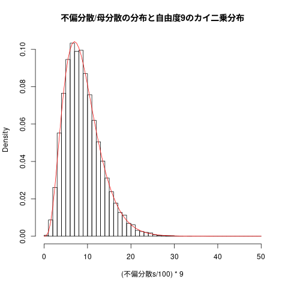

入門統計学 5章 \( \chi^2 \) 分布と \( F \) 分布
#+beign_src R :tangle R-text/code/05.R #+end_src
- \( \chi^2 \) 分布
- データの平方和である統計量 \( \chi^2 \) が従う分布
- 母分散の区間推定
- 独立性の検定
- \( F \) 分布
- 二つの \( \chi^2 \) の比が従う分布
- 等分散の検定
- 分散分析
5.1 \( \chi^2 \) 分布
工場で製造される製品の容量のバラツキは？
データの平方和
標準正規母集団からの無作為標本
\( X_{i=1:n} \) 標準正規母集団からの無作為標本
- 母集団が正規分布の場合は，標準化する
\( \chi^2 \) 統計量
標準化
\( X \sim N(\mu, \sigma^2) \) のとき， \( Z = \frac{X-\mu}{\sigma} \) \( \sim N(0, 1) \) となる。
\( Z^2 \) は，\(E[Z^2] = 0 \), \(V[Z^2]=2\), \( Z^2 \sim \chi^2_{(1)} \) (自由度1のカイ二乗分布) となる。
標準化された平方和の分布
教科書等では，統計量も分布も区別せずに \( \chi^2 \) で記述していますが， ここでは，標本サイズ \( n \) の統計量は \(K_{(n)}^2\), 自由度\(n-1\)のカイ二乗分布を \( \chi^2_{n-1} \) と区別して記述します。
\( K^2_{(n)} = \Sigma_{i=1}^{n} Z_i^2 = \Sigma_{i=1}^{n} (X_i-\mu)^2/\sigma^2 \)
自由度1のカイ二乗分布の和であるので，
- \( n \) は自由度。
- 期待値は \( n \),
- 分散は， \( 2 n \)
- 再生成 \( \chi^2_{(m+n)} = \chi^2_{(m)} + \chi^2_{(n)} \) がある
\( \chi^2 \) 分布
- 非対称, 平均は中央にない
curve(dchisq(x,df=1),from=0, to=10, lty=1, col=1,main="自由度によって形が変るカイ二乗分布") curve(dchisq(x,df=3),from=0, to=10, lty=1, col=2, add=T) curve(dchisq(x,df=10),from=0, to=10, lty=1, col=3, add=T) legend(2, 0.7, c("自由度=1", "自由度=3", "自由度=10"), lty=c(1,1,1), col=c(1,2,3))

5.2 母分散の区間推定
前提
- 母集団 \( \sim N(\mu, \sigma^2) \),
- \( \mu \), \( \sigma^2 \) は未知
分散の推定量 (標本不偏分散)
分散の推定量 \( S^2_{(n)} \) (以下，自明なときは標本サイズ \((n)\)を省く)は，
\( (n-1) S^2/\sigma^2 \sim \chi^2_{n-1} \)
信頼区間
\( P( u \leq (n-1) S^2/\sigma^2 \leq v ) = 1 - \alpha \)
\( 1-\alpha = P((n-1) S^2/v \leq \sigma^2 \leq (n-1) S^2/u )\)
なので，信頼区間は，
\( \left[((n-1) S^2/v, (n-1) S^2/u ) \right]\)
95% 信頼区間の両端点
### ### ### print(c("自由度", "", "下限", "上限")) for (d in c(4,8,16,32,64)) { print(c(d, qchisq(0.025,df=d), qchisq(0.975,df=d))) }
[1] "自由度" "下限" "上限" [1] 4.0000000 0.4844186 11.1432868 [1] 8.000000 2.179731 17.534546 [1] 16.000000 6.907664 28.845351 [1] 32.00000 18.29076 49.48044 [1] 64.00000 43.77595 88.00405
90% 信頼区間の両端点
### ### ### for (d in c(4,8,16,32,64)) { print(c(d, qchisq(0.05,df=d), qchisq(0.95,df=d))) }
[1] 4.000000 0.710723 9.487729 [1] 8.000000 2.732637 15.507313 [1] 16.000000 7.961646 26.296228 [1] 32.00000 20.07191 46.19426 [1] 64.00000 46.59491 83.67526
例題 (入門統計学5.2-p99)
### ### ### sample <-c(5, 8, 10, 11, 15) mu <- mean(sample) s2 <- var(sample) d <- length(sample)-1 low <- qchisq(0.025, df=d) high <- qchisq(0.975, df=d) c(d*s2/low, d*s2/high) c(sqrt(d*s2/low), sqrt(d*s2/high)) chisq.test(sample)
[1] 113.125311 4.917759 [1] 10.636038 2.217602 Chi-squared test for given probabilities data: sample X-squared = 5.5918, df = 4, p-value = 0.2318
標本不偏分散 (\( \hat{s}^2 \))の標本分布を求める
- 不偏分散は，母分散の不偏推定量
- 標本分散は，標本の散布度
## ## 標本不偏分散の標本分布 ## samples.no <- 10000 # いくつ標本を用いるか sample.size <- 10 # ひとつの標本の中のデータの個数 this.mean <- 50 # 分布の平均 this.sd <- 10 # 分布の標準偏差 不偏分散s <- numeric(samples.no) # 各々の標本の不偏分散値の保存場所 for (i in 1:samples.no) { 標本 <- rnorm(n=sample.size, mean=this.mean, sd=this.sd) # ひとつの標本の生成 不偏分散s[i] <- var(標本) } c(mean(不偏分散s),sd(不偏分散s)) # 標本不偏分散達の平均と分散
[1] 99.74877 46.92062
## ## 標本不偏分散の頻度表 ## hist(不偏分散s, breaks=seq(0,500,10), main="不偏分散の分布")
不偏分散の分布
## ## 標本不偏分散の頻度表 ## hist((不偏分散s/100)*9, freq=FALSE, breaks=seq(0,50,1), main="不偏分散/母分散の分布と自由度9のカイ二乗分布") curve(dchisq(x,9), add=TRUE, col="red")

\( \chi^2_{(n-1)} \sim \frac{(n-1) \hat{\sigma}^2}{\sigma^2} \)
- 信頼係数
- \( 1 - \alpha \),
F 分布
二つの母集団から抽出した二種の標本からの統計量が従う分布
等分散の検定
F統計量 :: \( F_{(\nu_1, \nu_2)} = \frac{\chi^2_{(\nu_1)}/{\nu_1}}{\chi^2_{(\nu_2)}/{\nu_2}} \)
F 分布のグラフ
curve(df(x,1,4),from=0, to=10, lty=1, col=1,main="自由度によって形が変るF分布") curve(df(x,5,28),from=0,to=10, lty=1, col=2, add=T) curve(df(x,28,6),from=0, to=10, lty=1, col=3, add=T) legend(2, 0.7, c("自由度=(1,4)", "自由度=(5,28)","自由度=(28,6"), lty=c(1,1,1), col=c(1,2,3))
curve(df(x,20,1),from=0, to=4, lty=1,col=1) for (i in seq(2,20,2)) { curve(df(x,20,i),from=0, to=4, lty=1,col=1,add=T) }
確率密度関数
\( f(F) = \frac{\Gamma(\frac{\nu_1+\nu_2}{2})F^{\frac{\nu_1-2}{2}}} {\Gamma(\nu_1/2) \Gamma(\nu_2/2) (1+\nu_1/\nu_2 F)^{(\nu_1+\nu_2)/2}} (\nu_1/\nu_2)^{(\nu_1/2)} \)
期待値 :: \( E(F) = \frac{\nu_2}{\nu_2-2} \), (ただし \( \nu_2 > 2 \))
分散 :: \( V(F) = \frac {2 \nu_2^2 (\nu_1 + \nu_2 - 2)} { \nu_1 (\nu_2-2)^2(\nu_2-4)} \), (ただし \( \nu_2 > 2 \))
5.4 特別なF値
F統計量 :: \( F_{(\nu_1, \nu_2)} = \frac{\chi^2_{(\nu_1)}/{\nu_1}}{\chi^2_{(\nu_2)}/{\nu_2}} \)
標本不偏分散
分散の推定量 \( S^2_{(n)} \) は，
\( (n-1) S^2/\sigma^2 \sim \chi^2_{n-1} \)
\( F_{(\nu_1, \nu_2)} = \frac{\chi^2_{(\nu_1)}/{\nu_1}}{\chi^2_{(\nu_2)}/{\nu_2}} = \frac{S_1^2/\sigma_1^2}{S_2^2/\sigma_2^2} \)
母分散が等しい場合は， \( F_{( \nu_1, \nu_2)} = \frac{S_1^2}{S_2^2} \) となる
F と t の関係
標本サイズ n とし，統計量に n を明示し，
\(T_{(n)} = \frac{\overline{X_{(n)}}-\mu}{\sqrt{S_{(n)}^2/n}} \)
\(T_{(n)} = \frac{ \frac{\overline{X_{(n)}}-\mu}{\sqrt{\sigma^2/n}}} {\frac{\sqrt{S_{(n)}^2/n}}{\sqrt{\sigma^2/n}}}\)
\(T_{(n)} = \frac{\overline{Z}_(n)} {{S_{(n)}}/{\sigma}} \)
\(T_{(n)^2} = \frac{\overline{Z}_(n)^2} {{S_{(n)}^2}/{\sigma^2 }} = \frac{\chi^2_{1}/1}{\chi^2_{n-1}/(n-1)} = F_{(1,(n-1))} \)
\(